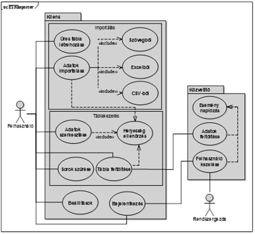

Szoftvertechnológia
Ezt a kurzus az szoftvertechnológia alapjait tartalmazza.
Tematika
- A tárgy célja, teljesítési feltételek.
- A szoftvertechnológia alapfogalmai.
- A szoftver, mint termék sajátságai.
- A szoftver fogalmának definíciója.
- A szoftver-fejlesztés lépései.
- A szoftver-fejlesztés életciklus modelljei
- A hallgatói feladatok prezentációja, a csoportok és feladatok véglegesítése az előadó megjegyzéseinek kiegészítésével.
- Szoftver folyamattevékenységek áttekintése.
- Szoftverspecifikáció, tervezés és implementáció, szoftvervalidáció, szoftverevolúció.
- Szoftverkövetelmények bemutatása.
- Funkcionális, nem funkcionális követelmények, felhasználói, rendszer követelmények.
- A követelménytervezés folyamata.
- Feltárás és elemzés.
- A követelmények dokumentuma.
- Megvalósíthatósági tanulmány.
- A vízió dokumentum prezentációja.
- Forgatókönyvek, etnográfia.
- Követelmények validálása.
- Szoftvertervezés.
- Architektúrális tervezés, rendszer-felépítési modellek.
- Objektumorientált tervezés.
- Az SRS dokumentum prezentációja.
- UML tervezés I.
- UML tervezés II.
- Tervezési munkák bemutatása
- Egyéni beszámolók írása.
- A hallgatói feladatok végleges verzióinak prezentációja.